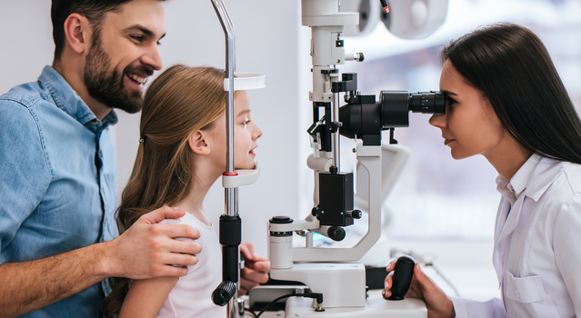

Houston Sunshine Deserves Healthy Eyes
Living in Texas means sunshine is part of everyday life. While that makes outdoor activities enjoyable, it also means your eyes experience regular exposure to ultraviolet light.
Summer Eye Health Tips from
Living in Texas means sunshine is part of everyday life. While that makes outdoor activities enjoyable, it also means your eyes experience regular exposure to ultraviolet light.

One of the biggest challenges during a Houston summer isn't always the weather outside. It's constantly moving between hot, humid temperatures and cool, air-conditioned spaces.

Many people update their wardrobe when the seasons change, yet they continue wearing the same glasses year after year.
Summer break often means more time outdoors, more sports, and more hours spent on tablets or gaming between activities. While kids may not always notice subtle changes in their vision, those changes can affect everything from reading to hand-eye coordination.

It's easy to dismiss blurry vision or tired eyes as part of a busy summer schedule. Sometimes, however, those symptoms deserve a closer look.
Summer often brings a change of pace, making it easier to schedule appointments that are easy to postpone during the rest of the year.
For generations,
Home » What’s New » Summer Eye Health Tips from Eye Shop
Jul 02, 2026
Houston summers bring sunshine, family adventures, and plenty of time outdoors. They also bring heat, humidity, and environmental conditions that can affect your eyes in ways you might not expect. A little extra attention this season can help keep your vision comfortable wherever summer takes you.
There's something special about summer in Houston. Longer evenings invite neighborhood walks, family vacations fill the calendar, and children spend more time playing outside before another school year begins. While you're making memories, your eyes are working overtime to adjust to bright sunlight, changing temperatures, air conditioning, and seasonal allergens.
At Eye Shop, we've been caring for Houston families for generations. We know that every patient has different vision needs, which is why we take a personalized approach to every eye exam . Summer is the perfect reminder that healthy vision isn't just about seeing clearly today. It's about protecting your eyesight for years to come.
Whether you're spending the afternoon at Memorial Park, relaxing by the neighborhood pool, or driving across Houston, quality sunglasses help reduce glare while protecting your eyes from harmful UV rays.
The right sunglasses should fit comfortably and complement your daily routine. At Eye Shop, we help patients choose designer frames and lens options that combine style with everyday function, making eye protection something you'll actually enjoy wearing.
These rapid changes can leave your eyes feeling dry, tired, or irritated by the end of the day. Staying hydrated, taking breaks from digital screens, and using lubricating eye drops when recommended by your optometrist can all help improve comfort.
If dryness becomes an everyday problem, our doctors can determine whether environmental factors are contributing or whether dry eye disease may be playing a role. Every treatment plan begins with understanding what's causing your symptoms.
Summer is an excellent opportunity to replace scratched lenses, update an outdated prescription, or choose sunglasses designed for everything from driving to outdoor gatherings. Because eyewear is something you wear every day, it should feel comfortable, perform well, and reflect your personal style.
Our team enjoys helping patients find frames that fit naturally, allowing you to leave with eyewear that looks great and feels even better.
A comprehensive eye exam gives your child's eyes the attention they deserve before another busy school year begins. At Eye Shop, we make pediatric eye care a comfortable experience, taking the time to get to know every child while carefully evaluating their vision and overall eye health.
Helping children see clearly today supports their confidence both in and out of the classroom.
Changes in vision, increased light sensitivity, persistent redness, or eye discomfort can signal conditions that benefit from prompt evaluation. Because many eye diseases develop gradually without obvious warning signs, routine comprehensive eye exams remain one of the best ways to protect your long-term vision.
Our eye doctors use advanced diagnostic technology to evaluate your eye health thoroughly while explaining each step of the process in a way that's easy to understand.
Whether you're updating your prescription, trying contact lenses for the first time, or searching for eyewear that better fits your lifestyle, this season offers the opportunity to focus on your vision before busy fall schedules return.
Because every patient has different goals, we tailor every recommendation to your daily routine, visual needs, and personal style.
For generations, Eye Shop has built lasting relationships with Houston families by combining medically focused eye care with genuine personal attention. We believe every patient deserves time, thoughtful answers, and solutions that are designed specifically for them.
From comprehensive eye exams and dry eye treatment to designer eyewear and contact lenses, our team is here to help you enjoy healthy, comfortable vision through every season.
If it's time for your next eye exam or you're ready to refresh your eyewear this summer, request an eye care appointment with Eye Shop. We'd love to help you and your family see every sunny day with confidence.
Eye Shop - Located at 13130 Memorial Drive, Houston, TX 77079. Phone: 713-977-8464